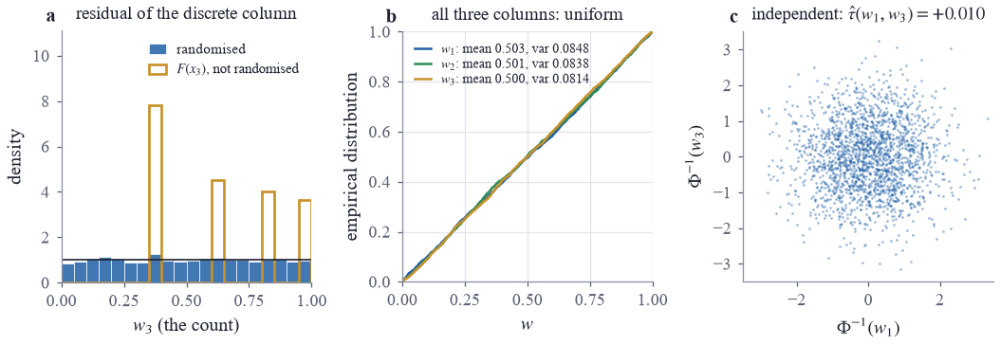
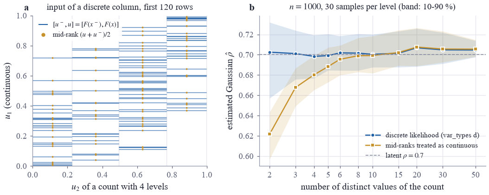

Discrete and mixed data¶
Counts, ordinal scores, rounded measurements and zero-inflated variables have marginal
distributions with jumps. A copula still links such margins (Sklar's theorem holds), but the
probability integral transform \(F(X)\) is no longer uniform, and the likelihood of an
observation is a probability mass rather than a density. fortvine handles this with the
convention of vinecopulib's var_types = "d" (Panagiotelis, Czado & Joe 2012; Panagiotelis,
Czado, Joe & Stöber 2017): each discrete variable is described by two numbers per
observation.
Input: u and u_minus¶
For a discrete variable \(X_j\) with distribution function \(F_j\):
so that \(u_{ij} - u^-_{ij} = P(X_j = x_{ij})\). For integer data \(F_j(x^-) = F_j(x - 1)\). Pass
u(n, d): \(F(x)\) for every column (continuous columns as usual),u_minus(n, d): \(F(x^-)\) for the discrete columns; entries of continuous columns are not read (copyinguthere is fine),discrete(d):.true.for the discrete columns.
The Python and R
packages follow vinecopulib instead: var_types gives "c" or "d" per variable, and with
\(k\) discrete variables the data have \(d + k\) columns, \(F(x)\) of every variable followed by
\(F(x^-)\) of the discrete ones, in their order.
\(F_j\) can be a fitted parametric margin or the empirical distribution function; with the
latter, using the denominator \(n + 1\) (as fv_pseudo_obs_nd does for continuous columns)
keeps \(u < 1\).
The discreteness flags are stored in vc%disc. Every evaluation of a vine with any discrete
variable then requires u_minus (pdf, loglik, rosenblatt) or ugm (pdf_grid).
fv_bicop methods have no u_minus argument; to fit or select a single pair with discrete
margins, use a two-dimensional fv_vinecop.
The likelihood of a pair¶
Let \(a, b\) be the two (conditional) margins of an edge, with \(a^-, b^-\) their left limits. The pair-copula likelihood used by fortvine is the joint probability divided by the product of the marginal masses, so that it is a density with respect to the product of the margins and directly comparable between candidates:
| margins of the observation | contribution |
|---|---|
| both continuous | \(c(a, b)\) |
| \(a\) discrete, \(b\) continuous | \(\dfrac{h_2(a, b) - h_2(a^-, b)}{a - a^-}\) |
| \(a\) continuous, \(b\) discrete | \(\dfrac{h_1(a, b) - h_1(a, b^-)}{b - b^-}\) |
| both discrete | \(\dfrac{C(a,b) - C(a^-,b) - C(a,b^-) + C(a^-,b^-)}{(a - a^-)(b - b^-)}\) |
A variable declared discrete whose observation has \(a - a^- \le 10^{-12}\) is treated as continuous for that observation, so mixed (partly continuous, partly atomic) margins such as zero-inflated data are handled row by row.
Conditional margins in higher trees¶
The next tree needs \(F(b \mid a)\) and its left limit. If the conditioning variable \(a\) is discrete, the conditional distribution averages over its jump:
fortvine computes this from the closed-form CDF when the jump is at least \(10^{-3}\) and the family has one, and by Gauss-Legendre quadrature of the h-function otherwise (the Student copula always uses quadrature). Both \(F(b \mid a)\) and \(F(b^- \mid a)\) are propagated, and a conditional margin is discrete exactly when the variable it describes is.
Fitting with discrete margins¶
- Gaussian, Clayton, Gumbel, Frank, Joe: the exact discrete likelihood with its score and curvature in closed form, maximised by Newton's method (as on continuous data).
- Other one-parameter families: Brent's method on the exact discrete likelihood.
- Multi-parameter families: the start grid followed by Nelder-Mead in logit coordinates on the exact discrete likelihood (value only: no dual-number scores on this path). The two-stage subsample scheme applies for \(n > 1800\).
- TLL, Bernstein: the estimate is computed from the mid-points \(\big(F(x) + F(x^-)\big)/2\) of the discrete margins, and its log-likelihood is then evaluated with the discrete formulas above.
Discrete fits are slower than continuous ones, mainly because the multi-parameter families
lose the exact scores and because every observation needs two to four copula evaluations. The
generic-family pre-screen is skipped on discrete edges, and relax
is not available for vines with discrete variables.
Rosenblatt transform¶
For a discrete variable the conditional distribution function \(F(x_k \mid \cdot)\) evaluated
at the data is not uniform. rosenblatt therefore returns, by default, Brockwell's (2007)
randomised transform for the discrete columns,
with independent uniforms \(W_{ik}\); under the model the \(w_{ik}\) are iid uniform, so the usual goodness-of-fit diagnostics apply. Continuous columns are transformed as usual.
The uniforms come from a counter-based hash of (seed, row, column), so the result is
reproducible and independent of the number of threads and of the Fortran random generator.
randomize = .false. returns \(F(x_k \mid \dots)\) itself, and out_minus(n, d) (optional)
receives \(F(x_k^- \mid \dots)\).

Simulation
inverse_rosenblatt and simulate do not use the discreteness flags: they return a sample
\(U\) of the copula on the continuous scale. Discrete observations are obtained by applying
the marginal quantile functions, \(x_j = F_j^{-1}(u_j)\), which is the standard latent-variable
construction.
Example¶
A latent Gaussian D-vine whose third variable is observed only as a count with four levels:
program discrete_demo
use fortvine_api
implicit none
integer, parameter :: dp = kind(1.0d0), n = 2000, d = 3
type(fv_vinecop) :: gen, vc
type(fv_controls) :: ctl
real(dp) :: v(n, d), u(n, d), um(n, d), r(n, d)
integer :: k(n), j, i
! latent Gaussian-copula sample; variable 3 is then made a count with 4 levels
call gen%set_dvine([1, 2, 3])
gen%fam(1:2, 1) = FV_GAUSSIAN; gen%par(1, 1:2, 1) = 0.7_dp
call gen%simulate(n, v, seed=2)
k = min(int(4.0_dp * v(:, 3)**1.5_dp), 3) ! counts 0..3
! continuous columns: u_minus = u (not used); discrete column: empirical F(x) and F(x-)
u = v; um = v
do i = 1, n
u(i, 3) = count(k <= k(i)) / (n + 1.0_dp)
um(i, 3) = count(k < k(i)) / (n + 1.0_dp)
end do
ctl%nthreads = 4
call vc%select(u, ctl, discrete=[.false., .false., .true.], u_minus=um)
call vc%print()
print '(a,f10.2)', 'discrete log-likelihood:', vc%loglik(u, u_minus=um)
! randomised (Brockwell) Rosenblatt transform: iid uniform under the model
call vc%rosenblatt(u, r, u_minus=um, seed=3)
do j = 1, d
print '(a,i0,a,f7.4,a,f7.4)', 'column ', j, ': mean', sum(r(:, j)) / n, &
' variance', sum((r(:, j) - 0.5_dp)**2) / n
end do
print '(a,f8.4)', 'tau(r1, r3):', fv_kendall_tau(r(:, 1), r(:, 3))
end program discrete_demo
import numpy as np
import fortvine as fv
n, d = 2000, 3
# latent Gaussian-copula sample; variable 3 is then made a count with 4 levels
gen = fv.Vinecop().set_dvine([1, 2, 3])
for e in range(2):
gen.set_pair_copula(0, e, fv.Bicop("gaussian", 0, [0.7]))
v = gen.simulate(n, seed=2)
k = np.minimum((4.0 * v[:, 2] ** 1.5).astype(int), 3) # counts 0..3
# F(x) of every variable (empirical for the count), then F(x-) of the discrete one: d + 1 columns
ks = np.sort(k)
fx = np.searchsorted(ks, k, side="right") / (n + 1.0)
fxm = np.searchsorted(ks, k, side="left") / (n + 1.0)
u = np.column_stack([v[:, 0], v[:, 1], fx, fxm])
vc = fv.Vinecop.from_data(u, var_types=["c", "c", "d"], num_threads=4)
print(vc)
print(f"discrete log-likelihood:{vc.loglik(u):10.2f}")
# randomised (Brockwell) Rosenblatt transform: iid uniform under the model
r = vc.rosenblatt(u, seed=3)
for j in range(d):
print(f"column {j + 1}: mean{r[:, j].mean():7.4f} variance{np.mean((r[:, j] - 0.5) ** 2):7.4f}")
print(f"tau(r1, r3):{fv.kendall_tau(r[:, 0], r[:, 2]):8.4f}")
library(fortvine)
n <- 2000; d <- 3
# latent Gaussian-copula sample; variable 3 is then made a count with 4 levels
gen <- vinecop_dist(list(rep(list(bicop_dist("gaussian", 0, 0.7)), 2), list(bicop_dist("indep"))),
dvine_structure(1:3))
set.seed(2)
v <- rvinecop(n, gen)
k <- pmin(floor(4 * v[, 3]^1.5), 3) # counts 0..3
# F(x) of every variable (empirical for the count), then F(x-) of the discrete one: d + 1 columns
Fk <- ecdf(k)
u <- cbind(v[, 1:2], Fk(k) * n / (n + 1), Fk(k - 1) * n / (n + 1))
vc <- vinecop(u, var_types = c("c", "c", "d"), cores = 4)
print(vc)
cat(sprintf("discrete log-likelihood:%10.2f\n", sum(log(dvinecop(u, vc)))))
# randomised (Brockwell) Rosenblatt transform: iid uniform under the model
set.seed(3)
r <- rosenblatt(u, vc)
for (j in 1:d)
cat(sprintf("column %d: mean%7.4f variance%7.4f\n", j, mean(r[, j]), mean((r[, j] - 0.5)^2)))
cat(sprintf("tau(r1, r3):%8.4f\n", cor(r[, 1], r[, 3], method = "kendall")))
Output:
fortvine vine copula: d = 3, trunc = 2
order: 1 2 3
tree 1 edge 1: gaussian rot 0 par 6.9863E-01 0.0000E+00 0.0000E+00
tree 1 edge 2: gaussian rot 0 par 6.9748E-01 0.0000E+00 0.0000E+00
tree 2 edge 1: indep rot 0 par 0.0000E+00 0.0000E+00 0.0000E+00
discrete log-likelihood: 1112.53
column 1: mean 0.4918 variance 0.0830
column 2: mean 0.4974 variance 0.0798
column 3: mean 0.4993 variance 0.0831
tau(r1, r3): -0.0190
fortvine vine copula: d = 3, trunc = 2
order: 1 2 3
discrete: 3
tree 1 edge 1: gaussian rot 0 par 0.6915
tree 1 edge 2: gaussian rot 0 par 0.6878
tree 2 edge 1: indep rot 0 par
discrete log-likelihood: 1135.49
column 1: mean 0.5032 variance 0.0848
column 2: mean 0.5013 variance 0.0838
column 3: mean 0.5003 variance 0.0814
tau(r1, r3): 0.0103
Vine copula ('vinecop_dist'): d = 3, trunc_lvl = 2, order = 1 2 3
npars = 2, loglik = 1146.31 (n = 2000)
discrete variables: 3
tree edge conditioned conditioning family rotation parameters
1 1 1, 2 gaussian 0 0.6835
1 2 2, 3 gaussian 0 0.6959
2 1 1, 3 2 indep 0 none
discrete log-likelihood: 1146.31
column 1: mean 0.5005 variance 0.0851
column 2: mean 0.5064 variance 0.0832
column 3: mean 0.4984 variance 0.0840
tau(r1, r3): 0.0079
Both latent correlations (true value 0.7) are recovered although one of the variables has only four distinct values, and the transformed columns have the mean \(1/2\) and variance \(1/12 \approx 0.0833\) of independent uniforms. Treating the count as continuous instead (its mid-ranks \((u + u^-)/2\) passed as ordinary pseudo-observations) gives 0.679 for the second parameter on the same (Fortran) data: the ties attenuate the dependence estimate, and the effect grows as the number of distinct values shrinks.
